ПРИМЕЧАНИЕ. В результате преобразования внешний вид объекта не изменится, однако объект будет представлять собой кривую Безье с соответствующими элементами: узлами и сегментами.
Лекция посвящена инструменту Shape (Форма) и способам редактирования с помощью этого инструмента. А также в лекции рассмотрено понятие Кривая Безье и её составляющие.

Любое векторное изображение состоит из множества элементов, которые можно редактировать независимо друг от друга. Основными "кирпичиками", из которых построено такое изображение, являются объекты — прямая, круг, прямоугольник, кривая, замкнутая кривая, многоугольник и т. п. Задавая объектам различное положение относительно друг друга, можно создать новый, часто достаточно неординарный объект.
Важными объектами в программах векторной графики (именно к таким программам относится редактор CorelDRAW) являются плавно изогнутые кривые, с помощью которых можно построить любой произвольный контур. Такие кривые называются кривыми Безье. Использование кривых Безье требует от пользователя отличного знания геометрии, а также аккуратности и усердия при создании линий и фигур. На рис. 5.1 представлен фрагмент кривой Безье с названиями ее элементов.
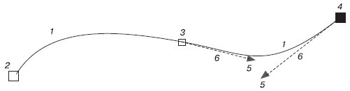
Рис. 5.1 Фрагмент кривой Безье: 1 — сегмент кривой Безье, 2 — начальный узел, 3 — узел, 4 — выбранный узел, 5 — маркеры направляющих, 6 — направляющие
На рис. 5.1 цифрами 2, 3 и 4 обозначены узлы (Nodes). Узлы являются концами сегментов кривой Безье (1). Каждому узлу может соответствовать одна или две направляющих, выходящих из него (на рисунке направляющие обозначены цифрами 6). Направляющие заканчиваются маленькими треугольниками — управляющими маркерами (Control Handles) (5). Эти треугольники можно перемещать с помощью мыши, тем самым изменяя длину и расположение направляющих.
Направление направляющей определяет изгиб кривой при редактировании, а от длины зависит степень кривизны.
Таким образом, координаты узлов, а также наклон и длина направляющих определяют внешний вид кривой Безье.
В предыдущих лекциях мы рассмотрели параметрические фигуры — объекты, внешний вид которых зависит от значений определенных параметров. Например, для прямоугольника таким параметром является скругление углов, эллипс можно превратить в сектор или дугу, многоугольник может иметь различное количество сторон и его можно преобразовать в звезду (внешний вид звезды определяется последовательностью соединения вершин), текст можно видоизменить путем выбора тех или иных параметров форматирования шрифта. Несмотря на многообразие параметров, все рассмотренные фигуры можно представить в виде кривых Безье, после чего редактировать на уровне узлов и сегментов.
Чтобы преобразовать любой параметрический объект в кривые, необходимо выполнить следующие действия.
Выделите требуемый объект.
Выполните команду меню Arrange - Convert To Curves (Расположение - Преобразовать в кривые).
ПРИМЕЧАНИЕ. В результате преобразования внешний вид объекта не изменится, однако объект будет представлять собой кривую Безье с соответствующими элементами: узлами и сегментами.
Чтобы увидеть узлы и сегменты объекта, преобразованного в кривую Безье, следует выделить его (рис. 5.2).
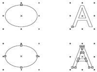
Рис. 5.2 Выделенные параметрические объекты (сверху) и эти же объекты, преобразованные в кривые Безье (снизу)
Преобразовав объект в кривые, можно изменить его внешний вид путем добавления, удаления и перемещения узловых точек. Все действия с узлами и сегментами кривой Безье выполняют с помощью инструмента Shape (Форма) ( ) (рис. 5.3).
) (рис. 5.3).
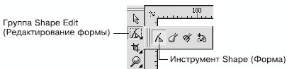
Рис. 5.3 Инструмент Shape (Форма)
Рассмотрим основные параметры, которые отображаются на панели свойств при активном инструменте Shape (Форма) (рис. 5.4).
Данные параметры можно условно разделить на две группы: часто используемые и редко используемые. Такое деление достаточно субъективное, не следует принимать его как должное. Однако если провести статистический анализ действий, которые выполняются над узлами и сегментами, то предлагаемое разделение может быть уместным. Итак, к часто используемым параметрам относятся следующие.
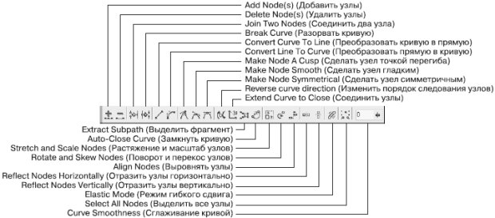
Рис. 5.4 Панель свойств при выбранном инструменте Shape (Форма)
Действия, производимые над узлами кривой, в которую преобразован объект:
Add Node(s) (Добавить узлы) — добавить узел в требуемое место сегмента кривой, в которую преобразован объект;
Delete Node(s) (Удалить узлы) — удалить лишние узлы кривой;
Join Two Nodes (Соединить два узла) — продолжить одну кривую из отдельных сегментов;
Break Curve (Разорвать кривую) — разорвать кривую в указанном узле.
Действия, производимые над сегментами кривой, в которую преобразован объект:
Convert Curve To Line (Преобразовать кривую в прямую) — преобразовать выбранный сегмент кривой в прямолинейный отрезок;
Convert Line To Curve (Преобразовать прямую в кривую) — преобразовать выбранный прямолинейный сегмент в управляемый криволинейный сегмент.
Более подробно о сегментах читайте ниже, в разделе "Сегменты".
Действия, производимые над узлами криволинейных сегментов:
Make Node A Cusp (Сделать узел точкой перегиба);
Make Node Smooth (Сделать узел гладким);
Make Node Symmetrical (Сделать узел симметричным).
О перечисленных видах узлов вы прочитаете ниже, в разделе "Узлы".
Относительно редко используют следующие команды.
Reverse curve direction (Изменить порядок следования узлов) — изменить порядок внутренней нумерации узлов, получаемый при создании контура объекта, обратным. Внешний вид объекта при этом не изменяется.
Extend Curve to Close (Соединить узлы) — соединить концевые узловые точки сегментов прямолинейным отрезком; контур при этом становится замкнутым.
Extract Subpath (Выделить фрагмент) — команда, значение которой равносильно значению пункта Break Apart (Выделить из) меню Arrange (Расположение).
Auto-Close Curve (Замкнуть кривую) — замкнуть разомкнутый контур, соединив его концевые узловые точки прямолинейным отрезком.
Stretch and Scale Nodes (Растяжение и масштаб узлов) — трансформационные искажения фрагмента кривой, ограниченной выбранными узлами.
Rotate and Skew Nodes (Поворот и перекос узлов) — вращение и сдвиг фрагмента кривой, ограниченной выбранными узлами.
ПРИМЕЧАНИЕ. Для выполнения трансформационных искажений, вращения и сдвигa фрагмента кривой необходимо выделить не менее двух узлов.
Align Nodes (Выровнять узлы) — расположить выделенные узлы по вертикали и/или горизонтали.
Reflect Nodes Horizontally (Отразить узлы горизонтально) — режим, который можно использовать для симметричного горизонтального изменения положения выделенных узлов относительно друг друга.
Reflect Nodes Vertically (Отразить узлы вертикально) — режим, который можно использовать для симметричного вертикального изменения положения выделенных узлов относительно друг друга.
Elastic Mode (Режим гибкого сдвига) — режим, при котором сегменты, соединяющие выделенные узлы, обладают эластичностью.
ПРИМЕЧАНИЕ. Для выполнения действий, связанных с выравниванием, отражением узлов и режимом гибкого сдвига, необходимо выделить не менее двух узлов.
Select All Nodes (Выделить все узлы) — выделить все узлы кривой.
Curve Smoothness (Сглаживание кривой) — сглаживание острых узлов кривой и последующее удаление "лишних" узлов.
Чтобы выделить требуемый узел, выполните такие действия.
Выберите инструмент Shape (Форма) ().
Щелкните на требуемом объекте.
Наведите указатель мыши ( ) на требуемый узел.
) на требуемый узел.
Когда указатель примет вид  , щелкните кнопкой мыши.
, щелкните кнопкой мыши.
СОВЕТ. Чтобы выделить сразу несколько узлов, используйте клавишу Shift. Удерживая данную клавишу в нажатом состоянии, выбирайте требуемые узлы, щелкая кнопкой мыши.
Чтобы выделить требуемый сегмент, выполните следующее.
Выберите инструмент Shape (Форма) ().
Щелкните на требуемом объекте.
Наведите указатель мыши на требуемый сегмент.
Когда указатель примет вид 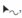, щелкните кнопкой мыши.
Чтобы применить инструмент Shape (Форма), необходимо действовать таким образом.
Выделить требуемые узлы и/или сегменты
Выполнить нужные действия над выделенными узлами или сегментами.
Сегмент кривой Безье представляет собой отрезок, соединяющий две соседние узловые точки. В общем случае сегменты могут быть прямолинейными или криволинейными.
Прямолинейный сегмент (рис. 5.5) представляет собой отрезок прямой линии, соединяющий две узловые точки. То, что сегмент является линейным, определяется не только тем, что узлы соединены прямой линией, но и тем, что эта линия не может быть искривлена. На концах линейного сегмента находятся узлы, называемые линейными узлами. Такие узлы не имеют направляющих со стороны линейного сегмента.
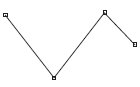
Рис. 5.5 Прямолинейные сегменты
Криволинейный сегмент (рис. 5.6) может быть представлен как изогнутой, так и прямой линией, но, в отличие от прямолинейного сегмента, каждый узел на его концах снабжен направляющими Безье, позволяющими изменять его форму. Направляющие представляют собой касательные к соответствующим участкам криволинейных сегментов. Маркеры направляющих можно перемещать ближе или дальше от узла, а также отклонять на определенный градус от него. Приближение маркера направляющей к узлу делает сегмент кривой более "натянутым", а удаление маркера как бы "искривляет" сегмент.
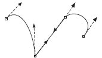
Рис. 5.6 Криволинейные сегменты
Чтобы задать сегменту определенный тип, необходимо выполнить следующие действия.
Выбрать инструмент Shape (Форма) (). Щелкнуть на требуемом объекте.
Навести указатель мыши на требуемый сегмент. Когда указатель примет вид , щелкнуть кнопкой мыши.
На панели свойств выбрать кнопку, соответствующую нужному действию: Convert Curve To Line (Преобразовать кривую в прямую) (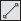) или Convert Line To Curve (Преобразовать прямую в кривую) (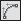).
Преобразование сегмента в криволинейный тип дает возможность изменять его кривизну. Чтобы изменить кривизну криволинейного сегмента, выполните такие действия.
Выбрать инструмент Shape (Форма) (). Щелкнуть на требуемом объекте.
Подведите указатель к криволинейному сегменту и, когда указатель мыши примет вид , нажмите кнопку мыши и перетаскиванием измените кривизну нужным образом (рис. 5.7).
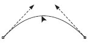
Рис. 5.7 Изменение кривизны криволинейного сегмента
ПРИМЕЧАНИЕ. Представленный способ изменения кривизны криволинейного сегмента позволяет создавать выпуклость и вогнутость на протяжении длины одного сегмента.
Другой способ изменения кривизны криволинейного сегмента предполагает использование маркеров, которые задают направление и величину направляющих. Направляющие, в свою очередь, определяют кривизну сегмента.
Чтобы изменить кривизну криволинейного сегмента с помощью маркеров направляющей, действуйте следующим образом.
Выбрать инструмент Shape (Форма) (). Щелкнуть на требуемом объекте.
Выделите один из узлов, ограничивающих сегмент. Это приведет к отображению направляющих на концах сегмента.
Подведите указатель мыши к требуемому маркеру направляющей, и когда он примет вид , нажмите кнопку мыши и измените кривизну перетаскиванием маркера (рис. 5.8).
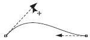
Рис. 5.8 Изменение кривизны криволинейного сегмента путем перемещения маркера направляющей
ПРИМЕЧАНИЕ. Расположение направляющей определяет изгиб кривой в месте расположения соответствующего узла. Длина направляющей определяет степень кривизны криволинейного сегмента.
Узлы на концах криволинейного сегмента имеют направляющие, с помощью которых можно изменять форму сегмента. В CorelDRAW существует три типа узлов: точка перегиба (Cusp Node), гладкий (Smooth Node) и симметричный (Symmetrical). Как упоминалось выше, маркеры направляющих можно перемещать ближе или дальше от соответствующих им узлов, а также отклонять маркеры на определенный градус. В зависимости от типа узла изменение положения маркера направляющей может приводить или не приводить к изменению соседнего сегмента.
Точка перегиба используется на концах кривых, а также в тех случаях, когда кривая должна перегибаться, как бы "ломаясь" в узловой точке. Направляющие узлов данного типа можно вращать и перемещать относительно узла независимо друг от друга (рис. 5.9).
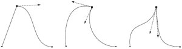
Рис. 5.9 Точки перегиба
Гладкий узел применяется там, где требуется получить кривую с плавным изгибом. Направляющие узла данного типа всегда остаются на одной прямой, то есть вращение направляющей с одной стороны узла автоматически приведет к аналогичному вращению направляющей с другой стороны. В то же время можно независимо друг от друга перемещать маркеры направляющих, устанавливая их ближе или дальше от узла (рис. 5.10).
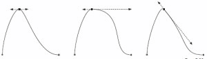
Рис. 5.10 Гладкий узел
Симметричный узел используется, когда необходимо соединить два симметричных сегмента кривой. В этом случае направляющие всегда находятся на одной прямой, причем на равном расстоянии от узла. Перемещение одной направляющей всегда вызывает центрально-симметричное зеркальное перемещение второй направляющей (рис. 5.11).
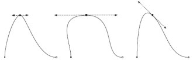
Рис. 5.11 Пример симметричного узла
Чтобы задать тот или иной тип узла криволинейного сегмента, необходимо выполнить следующие действия.
Выбрать инструмент Shape (Форма) ().
Щелкнуть на требуемом объекте.
Навести указатель мыши на нужный узел. Когда указатель примет вид , щелкнуть кнопкой мыши.
На панели свойств с помощью соответствующей кнопки выбрать необходимый тип узла: Make Node A Cusp (Сделать узел точкой перегиба) (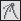), Make Node Smooth (Сделать узел гладким) (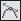) или Make Node Symmetrical (Сделать узел симметричным) (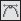).
ПРИМЕЧАНИЕ. Если данные команды не доступны, то предварительно следует преобразовать выбранной узел в узел криволинейного сегмента, щелкнув на кнопке Convert Line To Curve (Преобразовать прямую в кривую) ().
Кривая Безье является основополагающим понятием векторной графики. Именно работа с узлами и сегментами чаще всего дает возможность достичь желаемых результатов. Что бы вы ни создавали в программе CorelDRAW, построенный объект обязательно пройдет этап редактирования на уровне узлов и сегментов. Инструмент, который позволяет выполнять все эти редакторские изменения, — Shape (Форма) ().